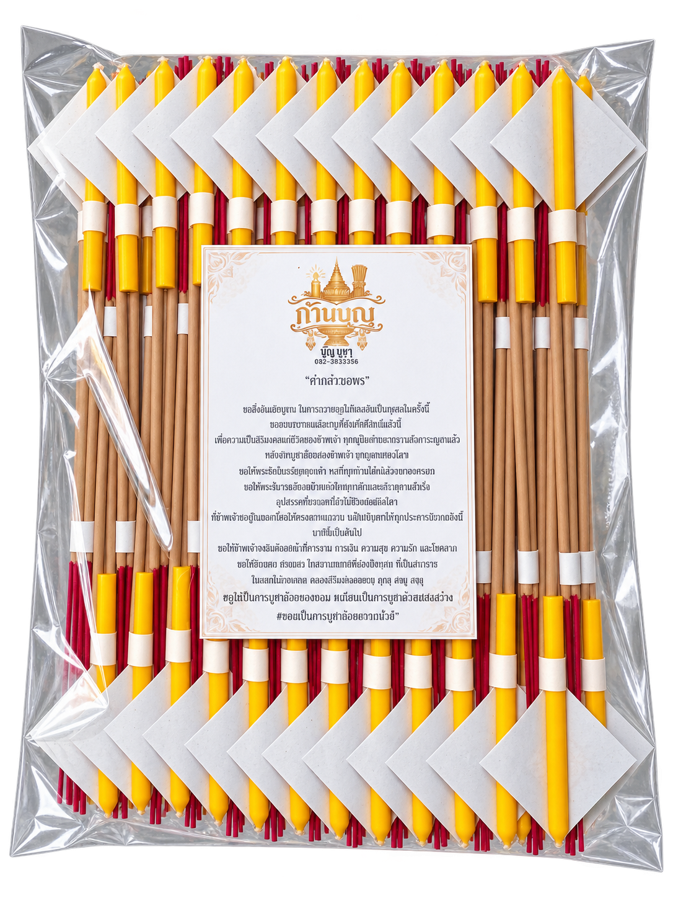
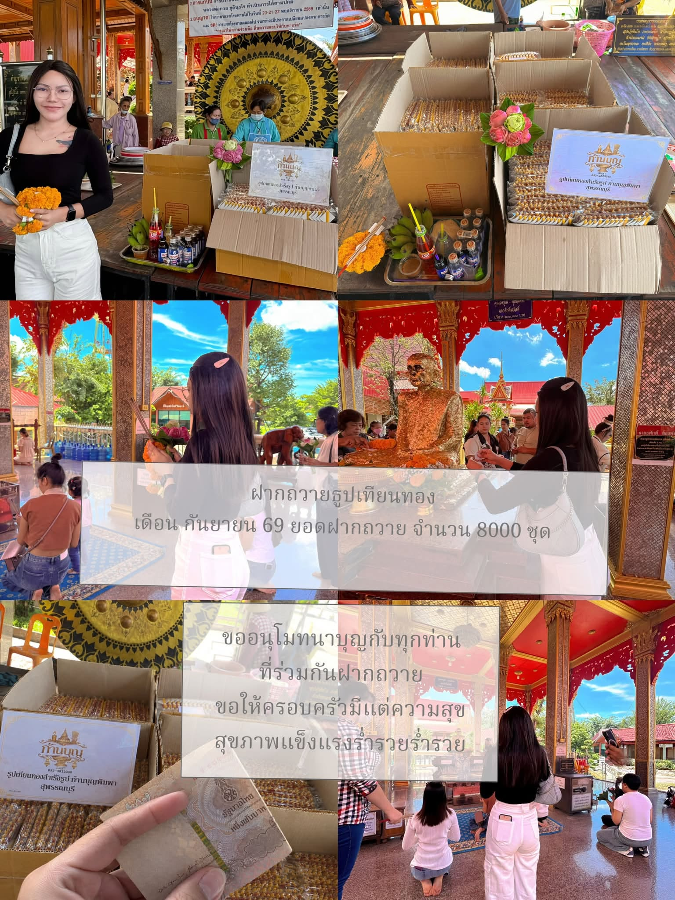
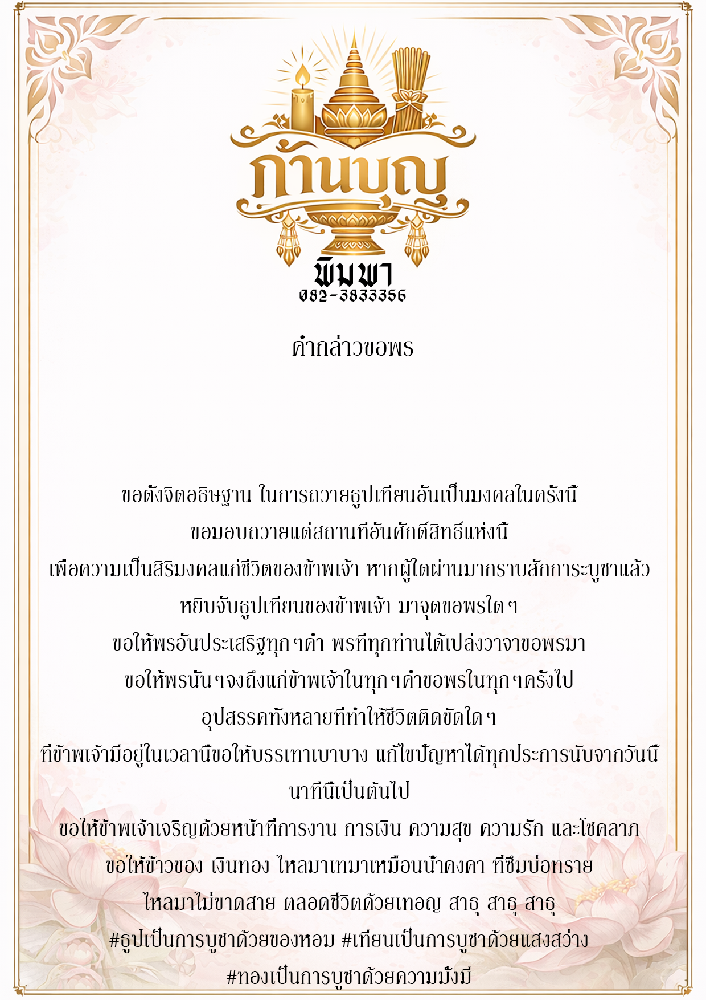
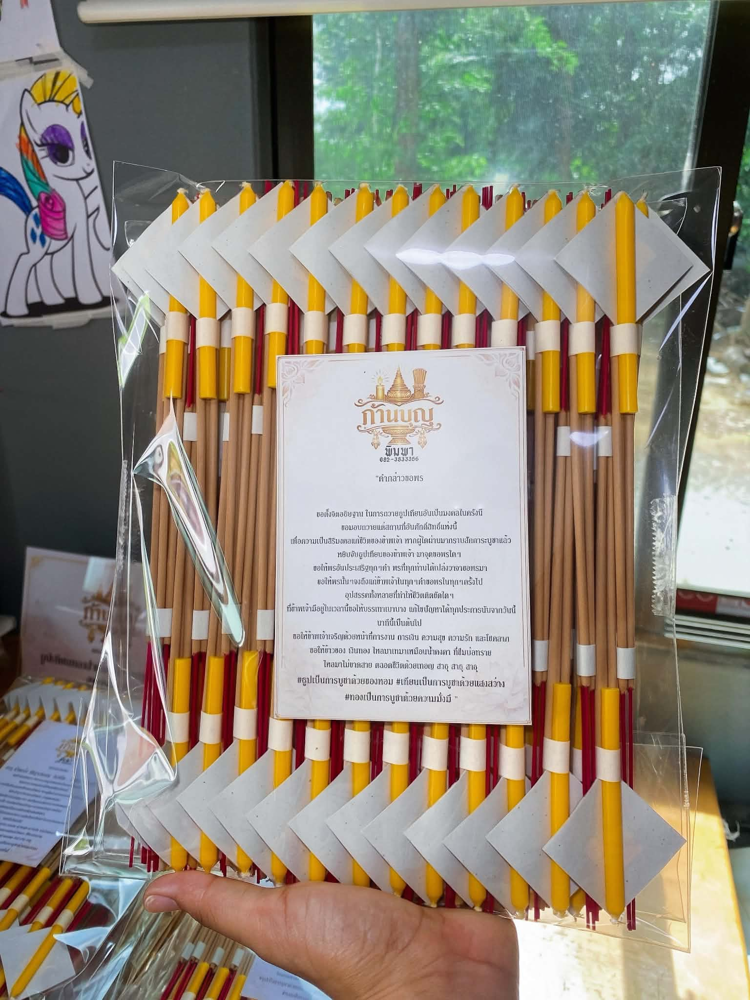
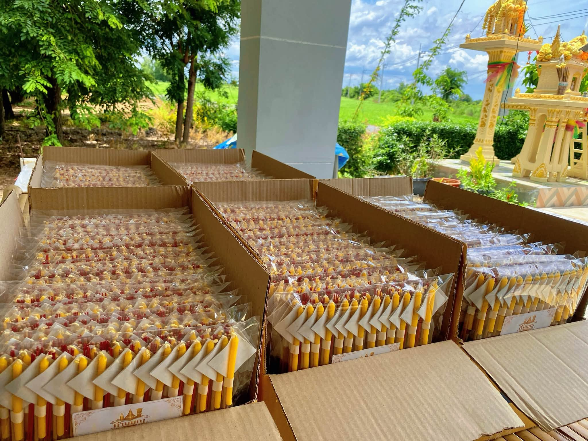
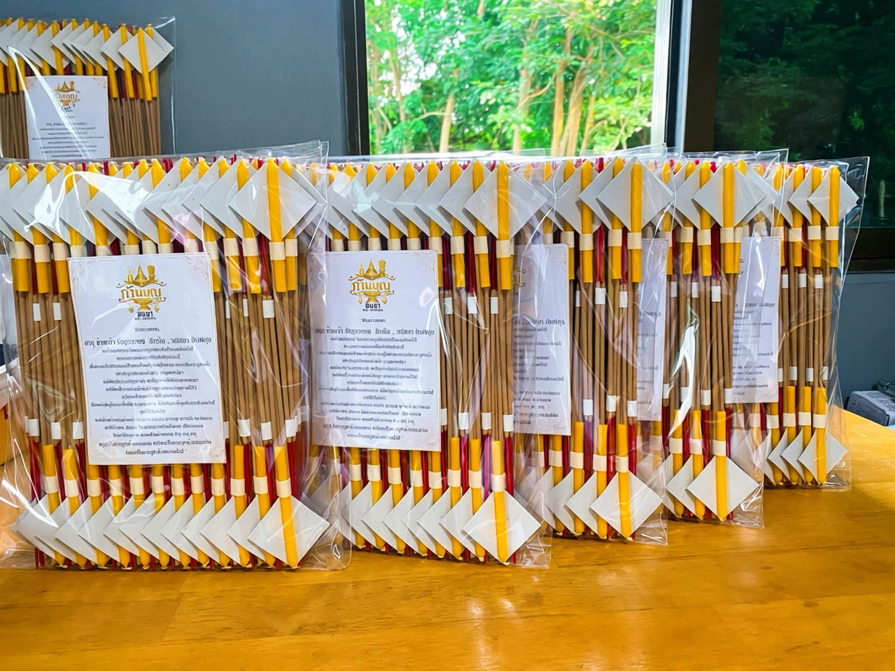
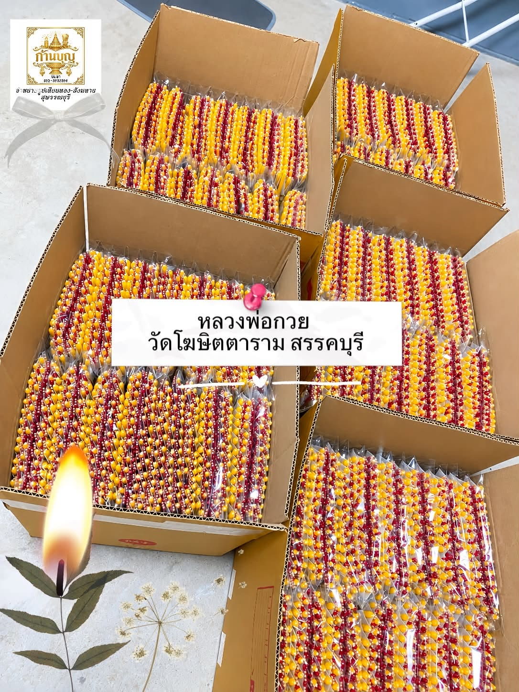
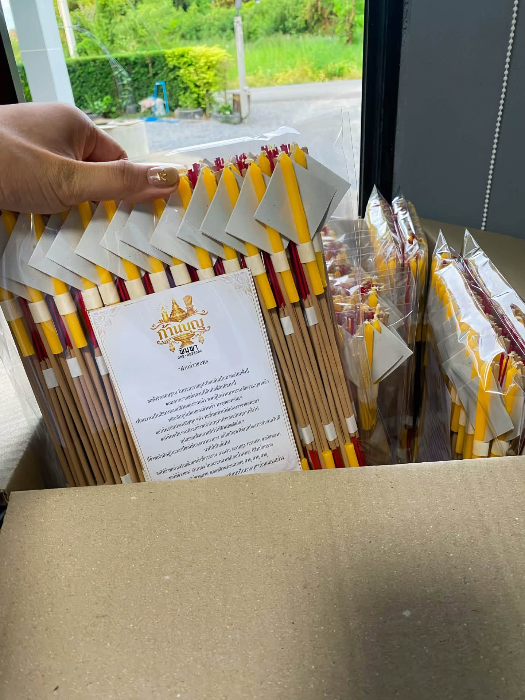
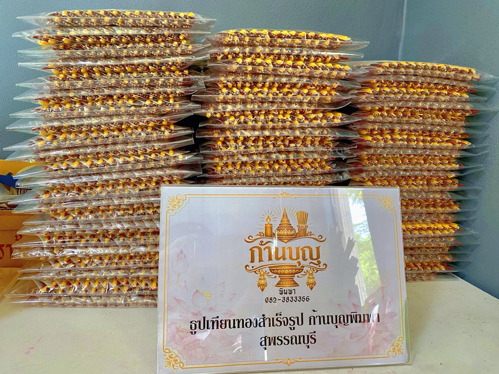

01
ชุดจุดประกายบุญ
ชุดธูปเทียนพร้อมใบอธิษฐาน สำหรับเริ่มต้นส่งต่อบุญ · บรรจุธูป 20 ชุด
฿ 99 / ชุด
เลือกชุดธูปเทียน ฝากเราเป็นตัวแทนนำไปถวายที่วัด พร้อมใส่ชื่อบนใบอธิษฐานและติดตามภาพการถวายได้ในที่เดียว

เลือกชุดธูปเทียน ฝากชื่อบนใบอธิษฐาน
แล้วร่วมถวายด้วยใจ ไปบนเส้นทางแสงสีทอง
อัปเดตข่าวจากก้านบุญ พิมพา พร้อมภาพและวันที่
ทุกจังหวัดที่มีคำสั่งซื้อจะเปล่งแสงสีทอง ยิ่งมีรายการยืนยันชำระเงินมาก แสงยิ่งสว่าง · แตะจังหวัดเพื่อดูจำนวน
กำลังเชื่อมต่อข้อมูลจริงจาก Google Sheet…
ขอบเขตจังหวัด: geoBoundaries / OpenStreetMap · ODbL 1.0
แสดงสถิติรวม ไม่แสดงข้อมูลรายบุคคล
หนึ่งคำสั่งซื้อที่ยืนยันชำระเงินแล้ว เป็นดอกบัวหนึ่งดอกในสวนแห่งนี้
ดอกบัวแห่งความคิดถึง — ดอก · ไม่นับรวมยอดคำสั่งซื้อ
ฝากถ้อยคำเล็ก ๆ ถึงคนสำคัญ แล้วปล่อยให้ความคิดถึงค่อย ๆ ผลิบาน
ร่วมได้โดยไม่ต้องซื้อสินค้า · แยกจากสวนและยอดคำสั่งซื้อทั้งหมด
ภาพบรรยากาศการถวายจากทางร้านรอประกาศสถานที่ถวายรอบปัจจุบัน
คุณร่วมถวายด้วยใจบนเว็บไซต์ แล้วทางร้านจะจัดเตรียมและนำชุดธูปเทียนไปถวายตามรอบ พร้อมอัปเดตสถานะและภาพการถวายให้ติดตาม
ติดตามเส้นทางชุดธูปของคุณ ↗เลือกแบบฝากถวาย หรือจัดส่งให้คุณนำไปถวายด้วยตนเอง
ชุดธูปเทียนพร้อมใบอธิษฐาน สำหรับเริ่มต้นส่งต่อบุญ · บรรจุธูป 20 ชุด
ธูปเทียนพร้อมใบอธิษฐาน ใส่ชื่อผู้ฝากถวาย · บรรจุธูป 50 ชุด
ชุดธูปเทียนพร้อมใบอธิษฐาน สำหรับฝากถวาย · บรรจุธูป 100 ชุด
ชุดถวายขนาดพิเศษ พร้อมระบุชื่อผู้ฝาก · บรรจุธูป 200 ชุด
ตั้งแต่เลือกชุดไปจนถึงตรวจสอบภาพหลังถวาย เราออกแบบให้ดูได้ชัดทุกขั้นตอน
ฝากถวายกับเรา หรือเลือกจัดส่งเพื่อถวายเอง
ดูตัวอย่างใบอธิษฐานที่ใส่ชื่อของคุณใต้คำกล่าวขอพร
แนบสลิปเพื่อรอตรวจสอบ ก่อนยืนยันคำสั่งซื้อ
เช็กสถานะและดูภาพยืนยันเมื่อดำเนินการแล้ว
กรอกเบอร์โทรศัพท์ที่ใช้สั่งซื้อ เพื่อดูคำสั่งซื้อทั้งหมดที่เกี่ยวข้อง
ใช้ภาพที่คุณเตรียมไว้เป็นแนวทางสำหรับการแสดงผลงานบนเว็บไซต์
ตัวอย่างชุดธูปและใบอธิษฐาน สำหรับนำชื่อผู้ฝากไปจัดวาง

ตัวอย่างบทอธิษฐานและงานกราฟิกของแบรนด์
ชมภาพจำลองชุดธูปเทียนที่นำไปถวาย · เป็นเพียงการจำลอง
ภาพการจัดเตรียมชุดธูปเทียนและตัวอย่างการนำไปถวายที่วัด






จากความตั้งใจของคุณ
สู่บุญที่ส่งถึงวัด
เดินทางไปกับแสงสีทอง เลือกเครื่องบูชา
ฝากชื่อบนใบอธิษฐาน และร่วมถวายด้วยใจ
กำลังโหลดราคาล่าสุด…
เลือกหลายแบบและเพิ่มจำนวนได้ในออเดอร์เดียว
เลือกแล้ว 0/99 แพ็ก · รวมทุกแบบในคำสั่งซื้อเดียว
ฝากถวายที่วัดตามรอบของทางร้าน
ชื่อของคุณจะอยู่บนใบอธิษฐานที่นำไปฝากถวาย
ตรวจรายละเอียดและยอดรวม ก่อนยืนยันการสั่งซื้อ
กำลังสร้าง QR ตามยอดชำระ
ผู้รับ: น.ส. พิมพา ศรีแสงเงิน
ตรวจชื่อผู้รับและยอดเงินก่อนโอน
คำสั่งซื้อจะรอการตรวจสอบสลิปจากทางร้าน
ร่วมถวายต่อได้ทันที หรือสร้างสะพานแสงของคุณ
ก่อนเดินทางเข้าไปยังพระพุทธรูปด้านในโบสถ์
ทั้งสองเส้นทางได้รับสินค้าและบริการเหมือนกัน
กิจกรรมนี้เป็นประสบการณ์บนเว็บไซต์ ติดตามการถวายจริงได้ที่หน้าติดตามคำสั่งซื้อ
เข้าสู่โบสถ์ เพื่อร่วมถวายตรงหน้าองค์พระ
ขออนุโมทนาในกุศลจิตครั้งนี้
ขอให้ท่านและครอบครัวมีความสุขและความเป็นสิริมงคล
เลื่อนเมาส์หรือลากบนการ์ดเพื่อชมลายทองที่สะท้อนแสง
รับคำสั่งซื้อแล้ว รอทางร้านตรวจสอบสลิป
ติดตามการถวายหรือจัดส่งจริงและภาพการถวายได้ที่หน้าติดตามสถานะ
การ์ดที่ระลึกไม่แสดงเบอร์โทรศัพท์หรือที่อยู่